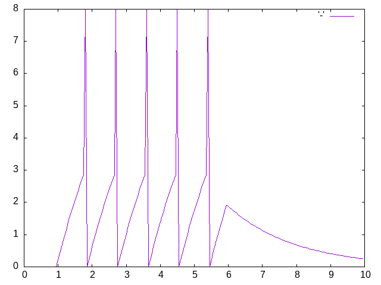

Integrate and Fire Neuron
1. Integrate and Fire Neurons
In this section we take a look at the history and math of the computational model of neuron firing called "Integrate and Fire" (I&F). The I&F model uses math essentially the same as the spring example. A more extensive use of the same math (differential equations) will be the content for our next section: the Hodgkin-Huxley spiking neuron model.
2. Is this a toy example?
Is the integrate and fire model used much in modeling in the present time. Have them do a quick literature search and share their opinions.
3. Origins
This section is mostly here for interest, but there are some good learning points:
- You can learn new things from old papers. Don't feel the only worthwhile literature is that which was published in the last couple of years.
- A lot of the lore in science is wrong. Did Lapique invent the I&F model? If not, who did?
- There is a lot of high quality work that can be done with ingenuity, persistence, and intelligence. Lots of money and technology can make some problems easier, but they are not necessary to make a contribution.
3.1. Lapicque - Earlier Computational Neuroscientist
3.1.2. Image of the Laboratory

3.1.4. Brief Biographical Details of Lapicque
3.2. Lord Adrian and the All-or-None Action Potential
When was the Action Potential Demonstrated? What was the experimental animal used by Adrian?
4. Background Reading
We have finally reached the point in the course where we are doing something neural. You may find that you want some supplemental material for working through our material or for trying additional activities on your own. There are a number of good on-line sources for this. Here are a couple of considerations.
4.1. My book
I wrote this about a decade ago when students were much less prepared for this sort of material. some of the sections begin with exercises in Excel, which might be helpful if you are having problems with the programming and want a more line by line effort to understand what is happening. It includes some commentary on different programming constructs and languages that also might be helpful if you are new to programming. There are later chapters on things like agent based learning that we never get to in our one term course, but that you might have fun working through on your own, or that would work for a final project. You can read it for free on-line through the University of Waterloo library.
5. The Integrate and Fire Equation
Our goal for this section of the course is to write a program that produces the spikes of an I&F neuron. We also want to understand a little bit of the math behind it, and why that makes sense for the conception of a neuron as an electrial mechanism.
\begin{equation} \label{eq:iandf} \tau \frac{dV(t)}{dt} = -V(t) + R~I(t) \end{equation}5.1. Electronics Background class_exercise
Each topic will be assigned to a group who will do some hurried research to explain to the rest of the class what the answers are.
- What is Ohm's Law?
- What is Kirchoff's Point Rule
- What is Capacitance?
- What is the relation between current and capacitance?
5.1.1. Write and explain Ohm's law
5.1.2. Explain what is the relationship between current and charge?
5.1.3. Explain Kirchoff's Point Rule
5.1.4. What is capacitance?
5.1.5. Explain the relationship, mathematically, between capacitance, charge, and voltage.
5.1.6. What happens when you differentiate this equation with respect to time and treat the capacitance as a constant?
5.2. Formula Discussion Questions
5.2.1. What does \(\frac{dV}{dt}\) mean?
5.2.2. What does \(\frac{1}{\tau}\) mean?
5.2.3. Why does the voltage term on the right have a negative sign?
5.2.4. What is \(I(t)\)?
5.2.5. Put it all together
5.2.6. Why, if we don't reach a threshold to fire an action potential, do we see an exponential decay?
5.2.7. Deriving the IandF Equation
5.3. Coding up the Integrate and Fire Neuron
You will have as your main homework for this week to write a functioning version of this. You can use my code as an example of what you are trying to implement if you get stuck on your own.
If it comes easy and quick then I have some bonus material for you to try listed at the end of this section.
(eval-when (:compile-toplevel :load-toplevel :execute) (ql:quickload "eazy-gnuplot" :silent t)) (defpackage #:mytest (:use #:common-lisp #:eazy-gnuplot)) (in-package #:mytest)
For practice I am making a lisp package. You will not have to do this in Python or R (but you can). It creates a "namespace" where the names of my variables and functions will live. I do this so as not to have names "clash" with those imported from other packages.
Here I am doing something similar to python's import or R's library with the quickload command. You too will want to start by making accessible the libraries you want to use. At least a graphics package for plotting the output.
As a quick class discussion, what are the "good" plotting graphics libraries for R and Python that one might choose?
(defparameter dt 0.05) (defparameter max-t 10) (defparameter init-t 0.0d0) (defparameter start-time 1.0d0) (defparameter stop-time 6.0d0) (defparameter cap 1) (defparameter res 2) (defparameter threshold 3.0d0) (defparameter spike-display 8.0d0) (defparameter init-v 0.0d0) (defparameter voltage init-v) (defparameter injection-current 4.3d0) (defparameter injection-time (cons start-time stop-time)) (defparameter tau (* res cap))
This is a good habit to develop with your code. Do not "hard code" in values for variables that you will have to write in multiple locations in a file. It makes it hard to update and debug your code. Give sensible and short names to things you will use in your code. Then define values for those at the top of your code. This gives you one place to look for explanations and reminders, and also gives you a place where when you make a single change it will propagate through your code.
The defparameter terms are words in lisp for this purpose. Some lisp programmers use of the +~signs or ~* around names to highlight that a variable is not meant to change.
All programming languages have their conventions, and while you do not have to use them, it is good to do so. It makes it easier for others to read your code so that they can help you, and so they can use what you have worked on. Here is a link to the python style guide. Code written in the usual style is said to be idiomatic.
(defun update (old-value rate-of-change time-step) (+ (* rate-of-change time-step) old-value))
This is the same updating rule that we used in the spring example. It is a rewriting of the definition of the derivative. This is sometimes referred to as Euler's method.
(defun dv-dt (localres locali localv) (* (/ 1 tau) (- (* localres locali) localv))) (defun between (x &key (lower (car injection-time)) (upper (cdr injection-time)) (if-true injection-current) (if-false 0.0d0)) (if (and (>= x lower) (<= x upper)) if-true if-false)) (defun voltage-choice (curr-volt spike-status &key (thr threshold) (sd spike-display)) (cond ((and (> curr-volt thr) (not spike-status)) sd) (spike-status 0.0d0) (t curr-volt)))
Just as we were given the equation for a spring, here we are given the equation for the I&F neuron, which we translate from math to code. These are being defined as functions. You can do the same in both Python and R, but will need a different keyword and syntax.
In addition, I create some smaller "helper" functions. It would be possible to collapse all this into one big function, but that would be harder for me to understand, and harder for you to understand. In general, try to write short little functions that do one thing. Then you can chain those small functions together to accomplish the larger task.
(defun run-iandf-sim (&key (tolerance 0.1d0)) (do* ((ts) (is) (vs) (tme init-t (+ dt tme)) (inj-cur 0.0d0 (between tme)) (spike nil (< (abs (- voltage-now spike-display)) tolerance)) (voltage-now init-v (voltage-choice (update voltage-now (dv-dt res inj-cur voltage-now) dt) spike))) ((> tme max-t) (list (nreverse ts) (nreverse is) (nreverse vs))) (push tme ts) (push inj-cur is) (push voltage-now vs)))
Again, if you squint, you will see similarities to the Spring exercise. Though things may look more complex here it is only because I have so many more local variables to define. The basic flow is still just a loop. Each of those local variables gets a start value and then a rule for updating each time through the loop. Later local variables can depend on the values of that came earlier in the list (that is the reason for the asterisk in do*). The loop also has a test condition for when to quit (like a "while" loop), and what it should do when that condition is met. Here it collects all the data into a big long list and reverses the order. I was pushing the recent values on to the front of the list each time, but now I need to reverse it so that time flows as we expect.
Define variables, and even functions, where you need them. It might be overkill here, but the idea is a good one to try and get in the habit of. When you need a function or a variable for only a small part of your program, make them local. Then they won't interfere with other parts of your program, and after you use them your programming language system can garbage collect them freeing up your computer's memory and your namespace. Local variables, local functions, and even un-named, so-called lambda functions, can make your code easier to read and understand as things are defined where they are needed and used. Defining local variables and functions does not require special keywords in Python and R, but can be inferred from the code itself.
(defun iandf-plot (output plot-data) (with-plots (*standard-output* :debug nil) (gp-setup :output output :terminal :png) (plot (lambda () (loop for times in (first plot-data) for volts in (third plot-data) do (format t "~&~a ~a" times volts))) :with '(:lines))) output)
Visualizations can be essential in helping you to see and understand the function of your computational program. Gain a good familiarity and facility with the plotting functions of whatever programming language you plan to use.
(iandf-plot "iandf.png" (run-iandf-sim))

Figure 1: I&F Neuron Response to Constant Input Current
In this function we can give a name to our plot and feed in the data it will use. In fact, I did not have to create and save the data. I was able to generate it internal to the function itself. This is sometimes thought of as function composition. You will also hear people talk of chaining functions or piping. Think of how you can connect a series of pipes together to get a flow from beginning to end. In the case of a programming language each of the pipes may do something to what it is carrying and the result can be a processed data stream.
6. Homework
- This weeks homework is to write a I&F program that does what I just did. It should generate a "spike" when given a constant input. Be sure to look at my code to see how that spike is created. If you don't understand that you will have a hard time.
- Related to the last point, does the I&F neuron truly spike?
- If (1) goes easy then here are some other things to try:
- create a refractory period for your neuron.
- give a noisy input rather than the single flat line I demonstrate.
- Look at how many times your neuron spikes to constant input. Is that what a real neuron does (try searching for Mainin and Sejnowski)? Does that affect the utility of the I&F model for computational neuroscience?
- Lastly, if all that goes quickly, and it will for some of you, but not most of you, try creating variations of this simple I&F model. You can find Matlab codein the book Dynamical Systems in Neuroscience as well as descriptions of many variations of this model (e.g. for the "quadratic" you replace the "v" with a \(v^2\) in the basic equation).
Upload your code to LEARN for credit.